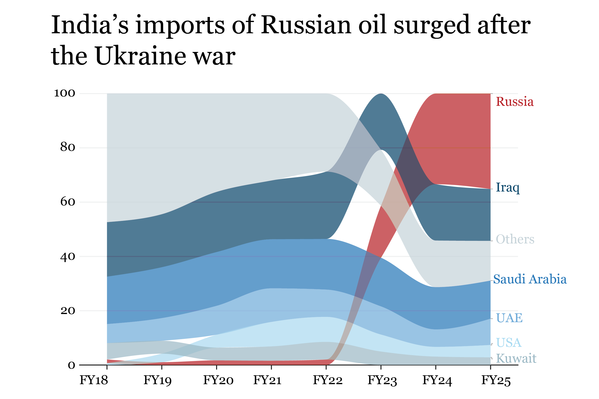
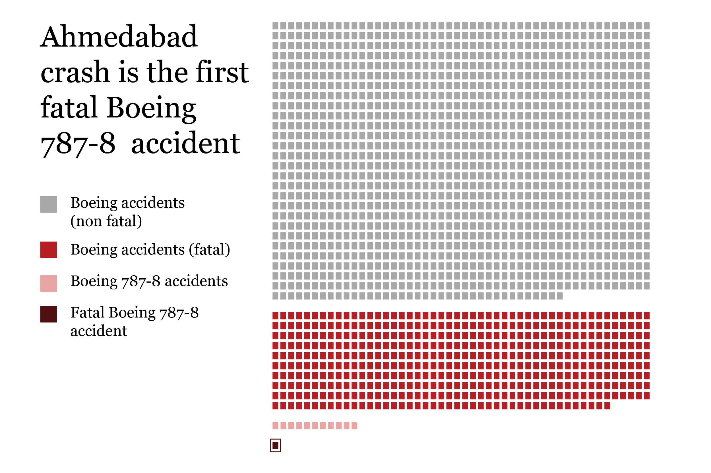
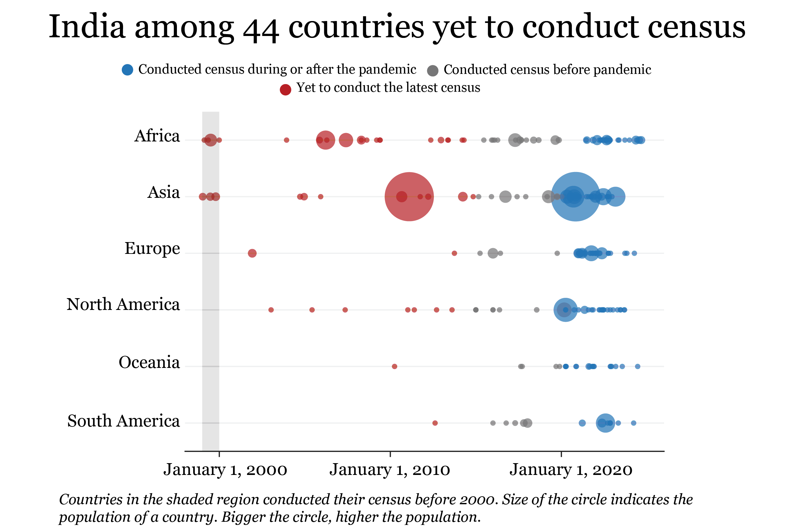
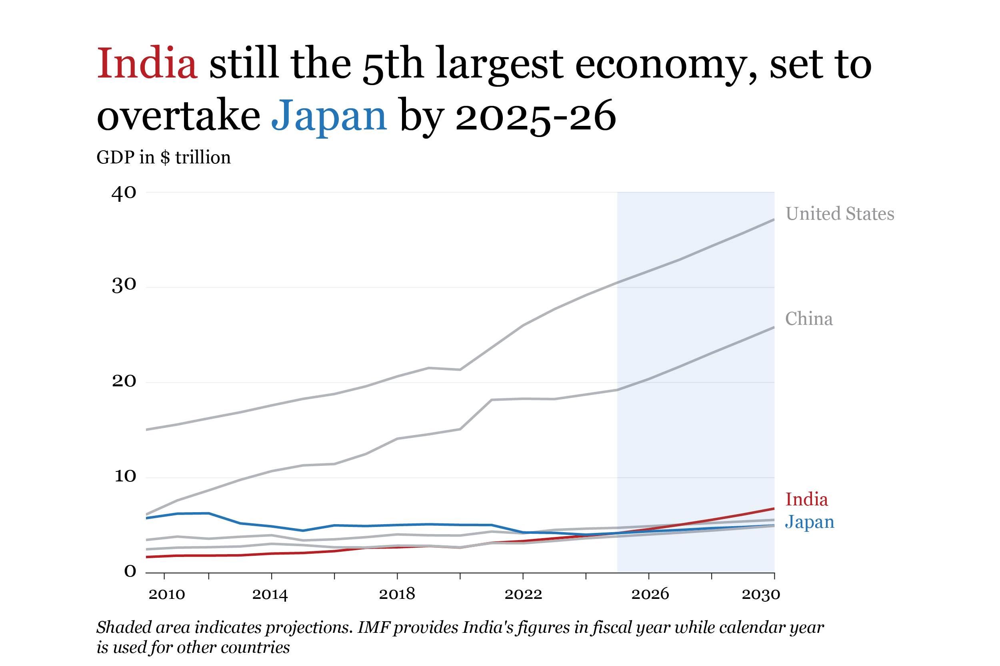
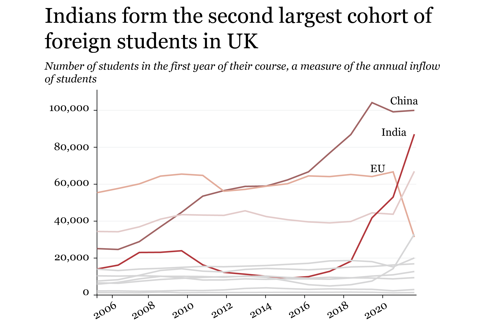
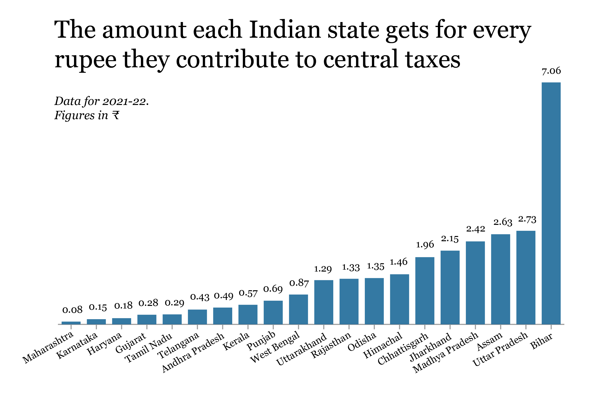

How has Bollywood changed in the last 30 years?
GitHub
SENIOR DATA JOURNALIST
I lead a team of designers, an illustrator, and a developer to produce visual, data-driven stories for BBC’s
six Indian languages. Previously, I worked with The Hindu's data team.
You can reach me at nihalani.66@gmail.com.
GitHub
BBC Hindi

The Hindu

The Hindu

BBC Hindi

BBC Hindi

The Hindu

BBC Gujarati

The Hindu

The Hindu